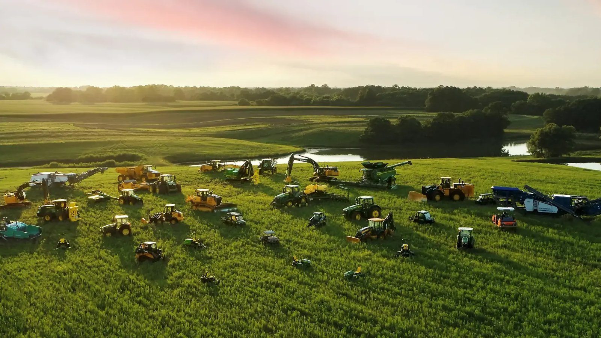
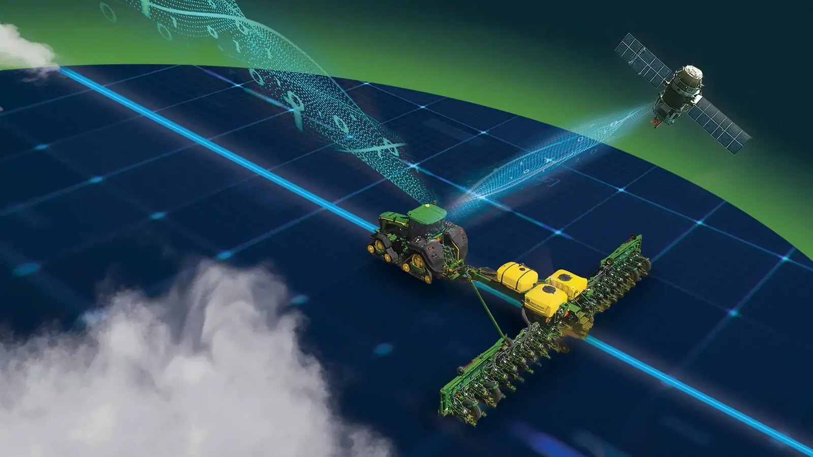

Tagesthema ·
Deere verfehlt die Erwartungen, und die Aktie steigt trotzdem um 4,4 Prozent
Weniger Gewinn je Aktie als erwartet, ein vorsichtiger Ausblick und am Morgen ein Kursrutsch. Am Abend lag die Aktie im Plus, weil Deere erstmals wieder eine Erholung bei großen Landmaschinen sieht.
Redaktion Vision Universe · Stand 26.11.2026, 06:00 Uhr · 3 Min. Lesezeit

Auf den ersten Blick sprach am Mittwoch alles gegen die Aktie. Deere verdiente im vierten Geschäftsquartal bis Anfang November 3,89 Dollar je Aktie, Analysten hatten laut CNBC im Schnitt mit 4,03 Dollar gerechnet. Und für das neue Geschäftsjahr stellt der Landmaschinenhersteller einen Gewinn von 4,5 bis 5,25 Milliarden Dollar in Aussicht, deutlich weniger als die 5,91 Milliarden, die Analysten laut CNBC erwartet hatten. Bis zum Mittag lag die Aktie laut CNBC mehr als 4 Prozent im Minus.
Am Ende des Handelstages stand ein Plus von 4,44 Prozent, nach unseren Daten auf 641,02 Dollar. Der Grund steht in einem Satz von Vorstandschef John May: Nach drei schwachen Jahren sieht Deere erstmals wieder mehr Nachfrage nach großen Traktoren und Mähdreschern.
Geschäftsjahr endet Anfang November; der Ausblick enthält eine einmalige Belastung aus Pensionen von 0,25 bis 0,40 Mrd. $ · Quelle: Deere & Company, Mitteilung vom 25.11.2026
Drei Geschäfte, drei Richtungen
Der Konzernumsatz sank im vierten Quartal um 2 Prozent auf 12,1 Milliarden Dollar, der Gewinn um 1 Prozent auf 1,05 Milliarden. Dahinter laufen die Bereiche weit auseinander. Das Kerngeschäft mit großen Landmaschinen und Präzisionstechnik verlor 15 Prozent Umsatz, der operative Gewinn fiel um ein Drittel auf 406 Millionen Dollar.
Dagegen wuchsen kleine Traktoren, Rasen- und Gartengeräte um 10 Prozent, und ihr operativer Gewinn stieg von 25 auf 233 Millionen Dollar. Bau- und Forstmaschinen legten um 12 Prozent zu. Über das ganze Jahr wuchs der Umsatz so um 4 Prozent auf 47,7 Milliarden Dollar, obwohl das größte Geschäft schrumpfte.
Quelle: Deere & Company, Mitteilung vom 25.11.2026
Warum die Börse nach vorn schaut
Für das Geschäftsjahr 2027 erwartet Deere bei großen Landmaschinen in den USA und Kanada eine um 5 bis 15 Prozent höhere Branchennachfrage, beim eigenen Umsatz in diesem Bereich ebenfalls ein Plus von 5 bis 15 Prozent. Es wäre das erste Wachstum seit Jahren in dem Geschäft, das Deere am meisten verdienen lässt. Bei Baumaschinen rechnet der Konzern mit gleichbleibenden bis um 10 Prozent höheren Umsätzen, in Europa mit einem leichten Rückgang der Nachfrage.
Dass der Gewinn trotzdem unter den Schätzungen bleiben soll, liegt auch an Sonderposten: Der Ausblick enthält eine einmalige Belastung aus der Abwicklung von Pensionsverpflichtungen von 0,25 bis 0,40 Milliarden Dollar, die kein Geld kostet. Laut Investing.com rechnet Deere zudem mit Zollkosten von rund 1 Milliarde Dollar. Im abgelaufenen Jahr erhielt der Konzern laut Mitteilung 383 Millionen Dollar an Zöllen zurück.

„Zum Start ins Geschäftsjahr 2027 sehen wir erste Anzeichen einer Besserung in der großen Landtechnik, angeführt von Nordamerika.“
John May, Vorstandschef von Deere & Company, Mitteilung vom 25.11.2026 (übersetzt)
Was unsere Daten zeigen
Nach unseren Daten schloss die Aktie am Mittwoch bei 641,02 Dollar. Sie liegt damit 11 Prozent unter ihrem Hoch, fast genau auf dem Stand von vor einem Monat und 32 Prozent über dem Vorjahr. Der Börsenwert beträgt rund 173 Milliarden Dollar. Unser Trendmodul steht noch auf abwärts, die relative Stärke gegenüber dem Gesamtmarkt aber bei 87 von 100.
In unseren Geschäftszahlen, die bis zum dritten Quartal reichen, liegt der Umsatz der vergangenen zwölf Monate bei rund 48 Milliarden Dollar, 8 Prozent mehr als im Vorjahr; die Nettomarge bei 11 Prozent. Das Kurs-Gewinn-Verhältnis liegt bei 35,6, das Kurs-Umsatz-Verhältnis bei 3,6. Unser Gesundheitscheck bewertet das Wachstum als solide, Profitabilität und Cashflow als stark; die Aktienzahl sinkt durch Rückkäufe. Unter den 50 großen Fonds, deren Meldungen wir zum dritten Quartal auswerten, gab es 18 Käufer und 26 Verkäufer.
Ein Gegenpol zur KI-Woche
Der Tag passte zur Stimmung an der Wall Street. Während Nvidia, Micron und andere KI-Werte erneut nachgaben, legten viele klassische Industriewerte zu. Der Dow Jones schloss laut CappNotes 0,33 Prozent höher bei 50.182,95 Punkten, der Nasdaq Composite verlor 0,62 Prozent. Auch der Landmaschinenhersteller CNH stieg nach unseren Daten um 8 Prozent, offenbar mitgezogen von Deeres Ausblick auf die Landtechnik.
Termine
- 25.11.2026Deere & Company: Zahlen zum 4. Quartal und Geschäftsjahr 2026, Ausblick auf 2027
- 18.02.2027Deere & Company: Zahlen zum 1. Quartal 2027 (laut Investing.com)
Quellen
- Deere & Company (SEC, Form 8-K, Exhibit 99.1): Deere Reports Net Income of $1.051 Billion for Fourth Quarter, $4.860 Billion for Fiscal Year, 25.11.2026
- CNBC: Stocks making the biggest moves Wednesday: HP Inc, Ambarella, Nvidia, Sandisk & more, 25.11.2026
- Investing.com: Deere earnings analysis: questions answered and next catalysts, 25.11.2026
- CappNotes: Closing Look — Wednesday, November 25, 2026, 25.11.2026
Zitate aus englischen Quellen sind übersetzt. Kurse, Kennzahlen und Fondsdaten im Kasten stammen aus Vision Universe (Stand siehe Kasten). Angabe Dritter: zusammengefasste Einschätzungen externer Analysten bzw. Pflichtmeldungen an die SEC, unverändert mit Quelle und Datum. Nicht von Vision Universe erstellt und keine Einschätzung von Vision Universe. Dieser Artikel wurde automatisch erstellt und vor der Veröffentlichung gegen die genannten Quellen geprüft.
Vision Universe
Diese Aktie mit allen Zahlen
Kurs, Bewertung, Geschäftszahlen, Chart und was große Fonds tun: In Vision Universe steht zu jeder Aktie dieselbe Analyse, auf der dieser Artikel aufbaut.
Artikel in Vision Universe öffnen→ Zum Start der App benachrichtigen